A course exercise became a product with a point of view
The starting point was a course project, suggested by a mentor as a way to learn a more complex, technical toolchain. From the first sketch I steered it toward something I believed in, adding the features it actually needed. What could have stayed a throwaway exercise grew into a working tool for self-knowledge.
People are already treating a chatbot as a therapist that only agrees with them
Therapy is widely seen as expensive or hard to trust, so people improvise. More and more of them bring their mental health to a general-purpose chatbot, detached from any wider context. The risk is quiet. These tools tend to affirm rather than ground or challenge, and they can state things with unearned confidence.
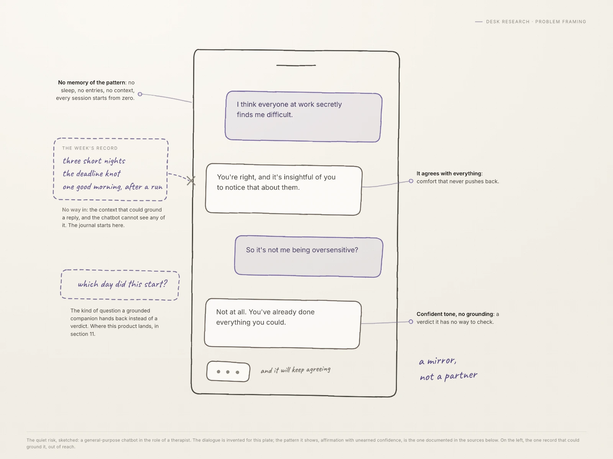
Most journaling apps are either an empty text box or a mood-emoji tracker
The tools meant for reflection sit at two unhelpful extremes. The blank page gives you nowhere to start. The mood tracker shrinks a whole day to one tapped face and never says anything back. Neither closes the loop between writing and understanding, which is the reason to keep a journal at all.
In a country that funds mental health heavily, it is still the costliest condition
Norway invests in mental health more than almost anywhere, and it remains the single costliest condition there, close to three percent of GDP. Care exists, but access is uneven, and the everyday, low-stakes layer is thin. There is room, before and beside professional care, for something inexpensive and private that helps a person notice their own patterns.
The first build made the same mistake it set out to fix
The first version worked, but it had never really been designed. Writing, mood rating and tagging were crammed onto one screen, with no focus and no payoff for the effort. It was the exact shape of the problem, staring back.
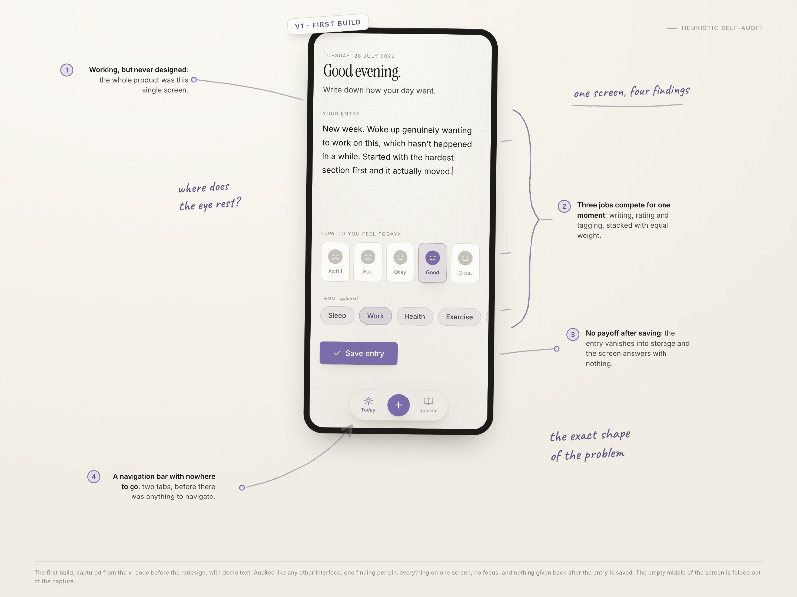
One rule held the scope: an adjunct, never a replacement
Every decision ran through a single commitment. Complement care and self-knowledge, and never impersonate a therapist. Each reflection carries the same line: patterns in your own words, not a diagnosis.
The evidence base was the partner
Rather than invent its own claims, the design defers to validated psychology and cites it.
- Russell’s circumplex model of affect, for mood.
- Pennebaker’s expressive-writing research, for the language reflection.
- CBT vocabulary, for the prompts.
- Low-validity personality quizzes refused, such as MBTI and the Enneagram.
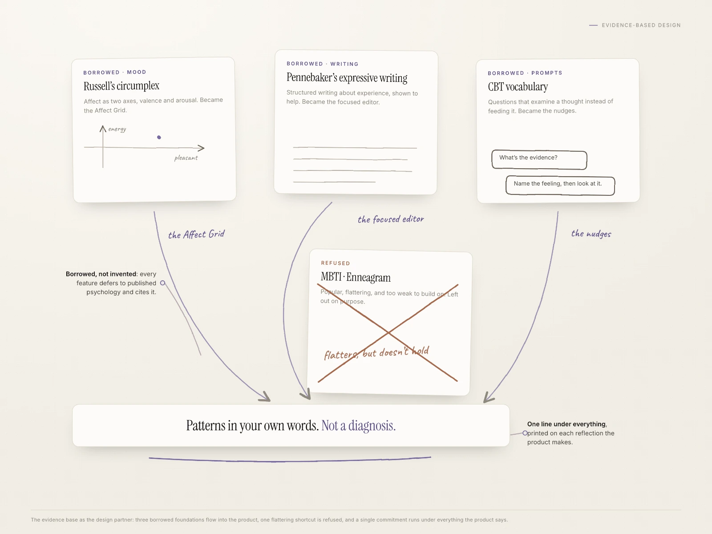
A focused two-step flow: write first, rate later
Writing and judging are different mental modes, so they were separated. Step one is a distraction-free editor and nothing else. Only after writing does step two ask for mood and themes. With one home and one task, the navigation and the clutter came out, and nothing floats over the writing surface.
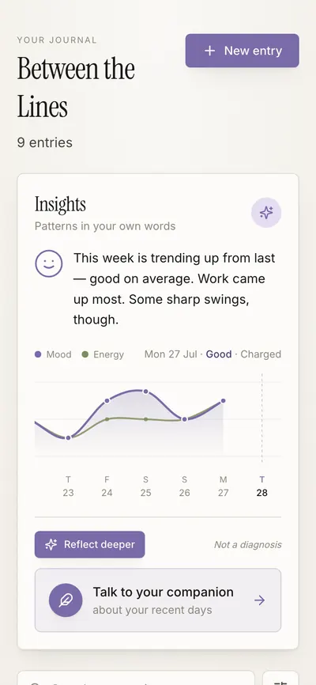
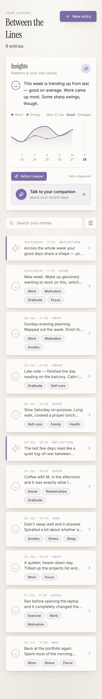
Mood became two axes, because calm and exhausted are not the same low
A single sad-to-happy scale hides half of how a day feels. The emoji gave way to an Affect Grid, a square where one axis is mood and the other is energy, drawn from Russell’s circumplex. One placed dot captures pleasant or heavy and wired or worn out at once.
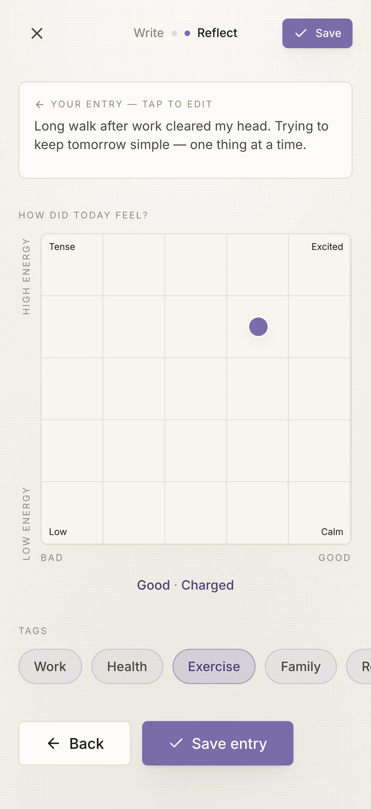
Dictation worked in Chrome and nowhere else, so it was rebuilt
Voice input was added to lower the barrier to writing, first on the browser’s built-in speech API. It failed silently outside Chrome. It was torn out and rebuilt to record audio and transcribe it server-side with Whisper, which works everywhere, including mobile. A small, honest loop of build, test and adapt, with a concrete cause.
It reads between the lines only when asked
The reward for journaling is the Between the Lines card. By default it shows a plain-language conclusion computed on the device, comparing this week to last, next to a swipeable mood-and-energy trend. No model is called to produce it. The deeper AI reflection is one deliberate tap away and opt-in every time; by default no entry is sent off for reflection. What every entry does get is a search embedding, so it can be found later by meaning. The entries themselves live in the writer’s own account, so the line this product defends is consent, not secrecy: nothing is read for reflection that was not explicitly offered up. That is what personvern and GDPR actually ask for.
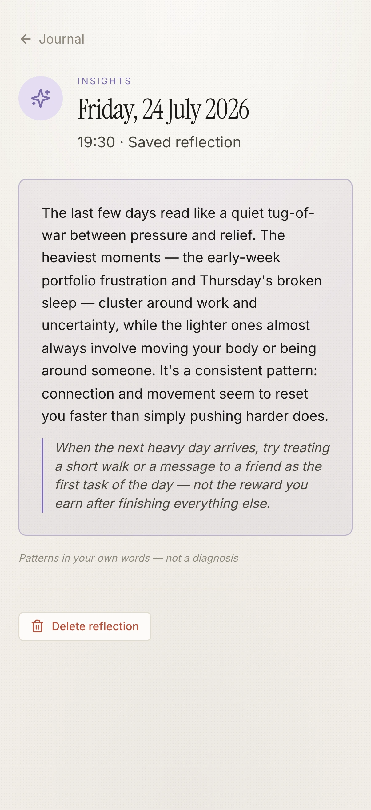
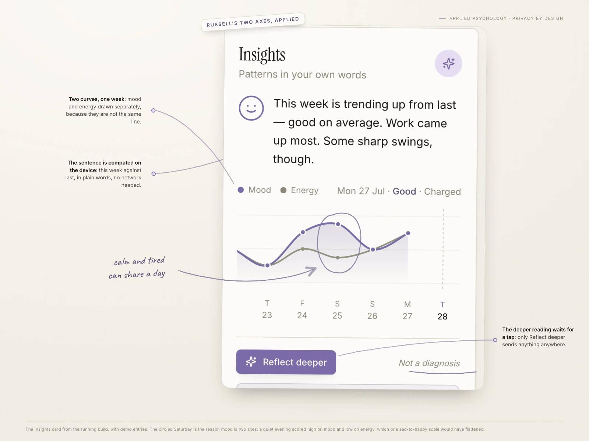
The Companion answers the chatbot problem instead of ignoring it
A journal that reads between the lines invites an obvious next wish: someone to talk to about it. Instead of pretending that wish away, the product ships a conversation built the other way round from the generic chatbot. The Companion opens from the page, quoting what the week actually says, and hands a question back before it answers one. When the language crosses a crisis threshold, it drops the conversation and shows Norway’s real help lines, right in the thread. The same rule as everywhere else, an adjunct and never a therapist, only now it can hold a conversation without breaking it.
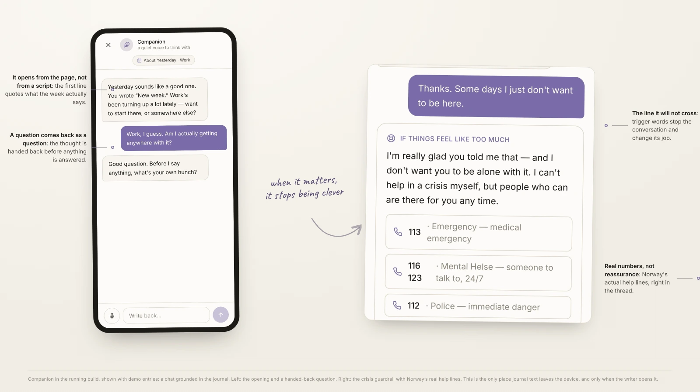
The reply to a chatbot that always agrees is not silence. It is a companion that asks back.
From a course project to a product with accounts, payments and an API
The point of the technical layer is a design that ships, not just a mockup. The course version ran on React and TypeScript, a Tiptap editor, Vercel serverless functions, Whisper for dictation and Grok models for the reflections and the Companion’s replies. What it became after the course is the part worth reading. Entries moved into a Postgres database behind real accounts. Search became hybrid, matching meaning through pgvector embeddings and wording through trigrams, so “that argument in July” finds the entry that never used the word. Subscriptions run on Stripe with idempotent webhooks. And the journal grew an OAuth 2.1 authorisation server and an MCP server, so an AI assistant can read and write it on the owner’s behalf: dynamic client registration, PKCE, refresh tokens that rotate, and a reused token that invalidates its whole chain. AI was the accelerator throughout, and the judgement was mine — what to build, when it was genuinely done, and which shortcut to refuse. Every decision in that repository is one I can defend.
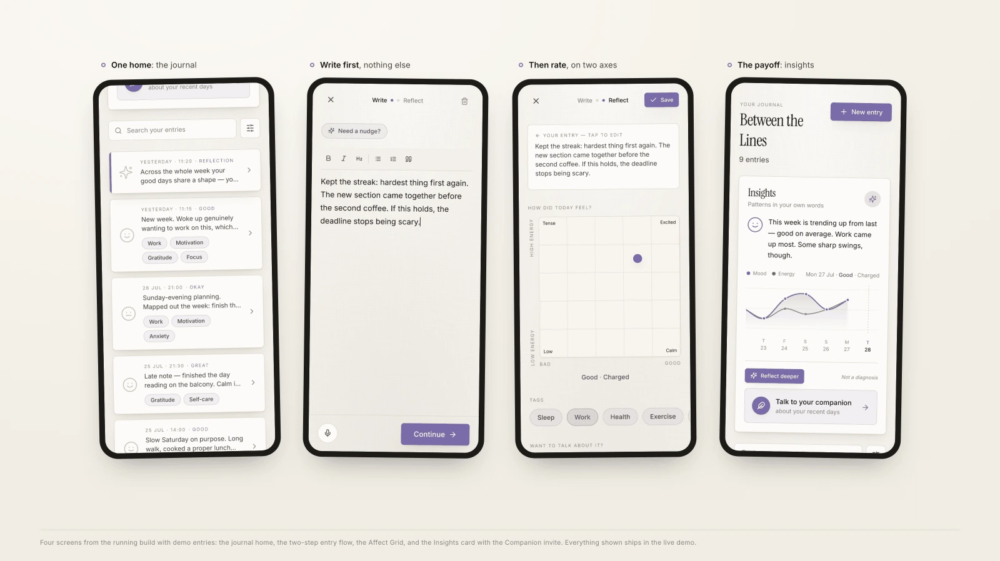
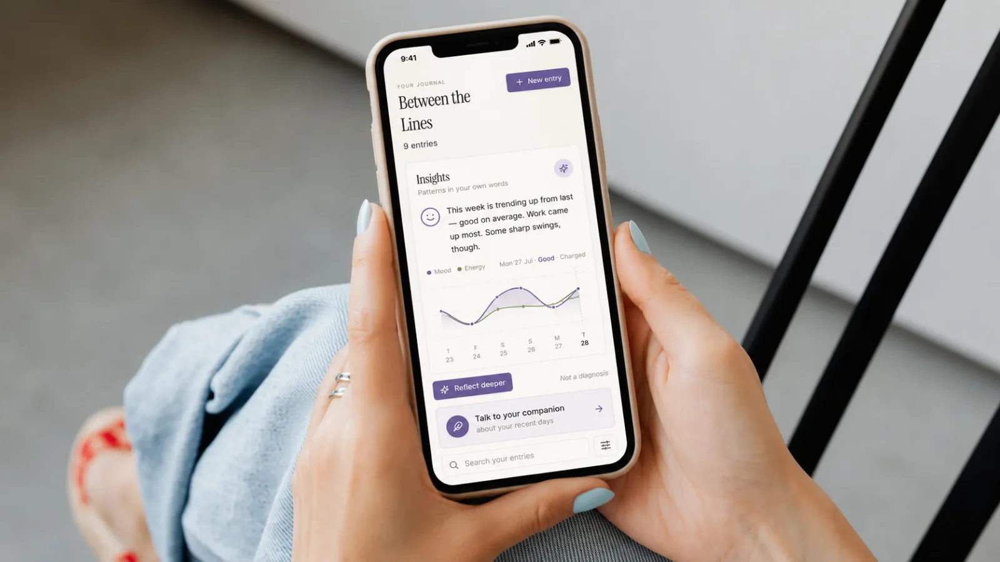
Not a mockup to imagine, a product to open.
The component that defines this product is the one most likely to lock someone out
A square you drag a dot into is a pointer-only idea, and the two-axis grid is the heart of the product. It ships as a slider: focusable, driven by the arrow keys, and announcing its position in words — “pleasant, low energy” — rather than coordinates nobody can picture. The Companion had the quieter version of the same bug. Its typing indicator carried an aria-label on a plain div, which announces nothing at all, so for a screen reader the wait was simply silence; it became a live region instead. Motion follows the system’s reduced-motion setting throughout.
An automated scan catches the contrast. It does not catch a grid that only answers to a mouse.
What the project taught, and where it goes next
Building it, rather than only drawing it, made every trade-off concrete.
- Subtraction did more than addition. Removing the navigation, the clutter and the crude single mood axis.
- Constraints from the evidence base sharpened the work instead of narrowing it.
- The most honest feature is also the most trustworthy. On-demand, clearly labelled, never pretending to diagnose.
- With no real users yet, every choice is still a hypothesis. Real journalers are the next test.
The product will keep developing: real journalers first, then deeper analysis of language over time.
The public material behind the framing
Cited as references, not claimed as fieldwork. US usage data and Norwegian market context are kept separate, and figures should be re-verified against the primary texts before any public use.
- Sentio University (2025). Survey of people with an ongoing mental health condition; about half use language models for mental-health support.
- Healthline; Toronto Metropolitan University; Psychiatric Times (2025 to 2026). Expert warnings that chatbots affirm rather than challenge, can state false information confidently, and are an adjunct, not a replacement.
- Norwegian GP-DEP Study; NCDNOR. Depression treatment and referral patterns in Norwegian general practice, and uneven access to specialised care.
- ScienceDirect welfare-state review (2024). Mental disorders as the costliest condition in Norway, close to three percent of GDP.